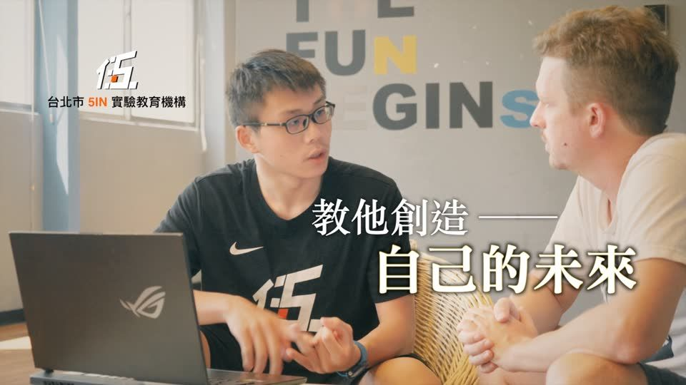
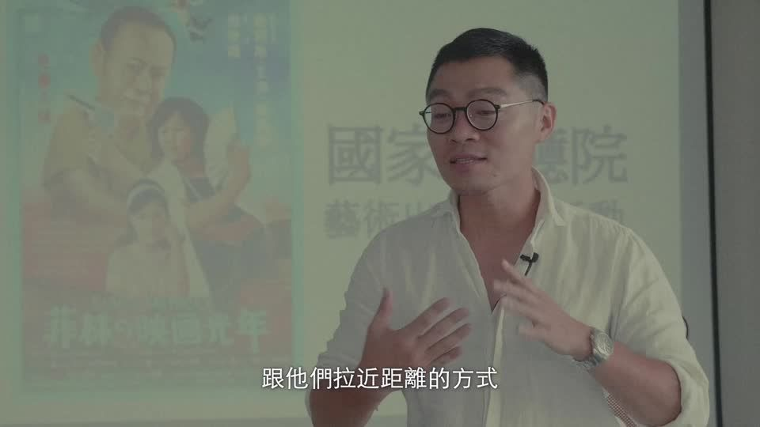
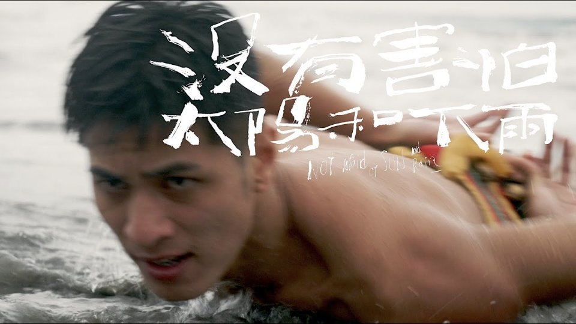

5IN 是 2025 年成立的實驗教育機構。影片要給這些人看：在學家長、還在考慮的家長、主管機關。校方自己也想留下紀錄。
從籌備到成立兩個學期，我製作了 22 支影片。其中八成的素材是老師和學生自己拍的。這當然比較經濟，但更重要的是，在其中的人拍得更真實、更有臨場感。
22 支影片分成好幾種，設定不同的觀眾和目的。合起來，就是從不同的角度，去看這所學校怎麼教。
宣傳、介紹、活動紀錄，是我平常在做的。
花上幾個月的紀錄片，我也做。
不管問題多笨，我都會問。
遇到要好好交代的事情，
我會當作自己什麼都不懂。
接著，我會想兩件事：
什麼事情，是只有你才講得出來的？
我們設定的觀眾，會對哪裡感興趣？會被什麼打動？

5IN 是 2025 年成立的實驗教育機構。影片要給這些人看：在學家長、還在考慮的家長、主管機關。校方自己也想留下紀錄。
從籌備到成立兩個學期，我製作了 22 支影片。其中八成的素材是老師和學生自己拍的。這當然比較經濟，但更重要的是，在其中的人拍得更真實、更有臨場感。
22 支影片分成好幾種，設定不同的觀眾和目的。合起來，就是從不同的角度，去看這所學校怎麼教。

看片子｜5IN 實驗教育機構▶3:01故宮開課培訓新住民，讓他們用母語替同鄉導覽文物。我負責把這個專案記錄下來。
主辦單位想強調新做法，我也拍到了充分的素材。但從開拍那天我就覺得，片子需要一位主角，觀眾才能具體看到培訓對學員的意義，不然只是記錄程序總覺得有點浪費。
好的主角真難找，怎麼找到的也挺意外……
我訪談了至少七八位吧，有點累、有點氣餒，也覺得自己算是盡力了。這時候，主辦方介紹了一位住在彰化的越南學員。為了上課，她清晨四五點就得出門，有時前一天就先上台北過夜。
我寒暄兩句，下意識問了一個對片子來說，其實沒什麼意義的問題：
「這麼遠，你一個人來不會很無聊嗎？怎麼沒有朋友跟你一起來，當作是來台北玩？」
她忽然哭了。她說家鄉來的其他姊妹都笑她，有這時間還不如拿去賺錢。但她就是很喜歡學習呀！
主角就這麼找到了。
她覺得，這門課給了異鄉人一群夥伴，也給了她一個前進的機會。
 看片子｜故宮 新住民文化導覽課程紀錄片▶
看片子｜故宮 新住民文化導覽課程紀錄片▶
兩廳院有個「藝術出走」專案，是要把藝術推廣到偏鄉去，一年有好幾場大型演出，還有巡迴教學，需要很多贊助支持。
這是我第一次接到規模比較大的客戶，非常緊張。
我們分好幾週，去了好幾個地方拍，過程也很多感動。第一版，我用了當時最好的技術，挑情緒最飽滿、畫面最美、表情最生動的鏡頭；也挑出我覺得最棒的訪談句子，傳達非凡的意義。
但負責窗口回覆：張力不夠。
天哪，這句話真的很抽象！
我一邊翻硬碟，尋找更有張力的鏡頭；一邊開始責備自己，這麼好的案子，如果觀眾感受不到力量，那真的是浪費在我手上！
但我找不到更有張力的鏡頭。
截止期限快到了，我終於決定冒險：如果這是一個故事，一定會有困難、矛盾和質疑，而我以前覺得業主不會喜歡這些東西。
但故事的力量成功了，也成為我永遠忘不了的一課。

看片子｜對他們來說，藝術是服務業▶5:24桑布伊是金曲獎歌王，當時首度要在兩廳院辦演唱會，我接到了製作宣傳影片的任務。
但當時安排好的拍攝，只有一場他的歌唱分享會。
我又頭痛了，一場記錄可以做宣傳片嗎？
負責夥伴說，不然行前還有一場記者會，他會在國家戲劇院現場清唱一段，我當下就覺得那會是更棒的素材。
那段清唱果然很棒，拍完我甚至覺得工作已經結束了。
可是工作並沒有結束，拍完分享會之後，我才知道夥伴為什麼安排我去拍，因為桑布伊講了很多讓我這個城市人反覆深思的事情。
這讓我忍不住去想：他到底為什麼要唱歌？我能不能幫他把想說的傳達出去？
於是我動手把分享會的訪談、很多資料和報導整理起來，做成初版的第一支影片。夥伴建議把一支擴充成三支，就用一棵樹來命名吧。
根是過去，講他歌聲的來源。幹是現在，直接聽見他的聲音。葉是未來，告訴觀眾講他想要到哪裡去。
這段是我很喜歡的工作故事。
 看片子｜導演版▶4:17
看片子｜導演版▶4:17
布拉瑞揚舞團在兩廳院的新作，開演前需要宣傳短片。
有了上演日期，有了名稱，也有了創作概念。但舞團總監還不確定演出內容會是什麼。
他率領所有團員到台東集訓，感受阿美族文化、尋找靈感。
我們的困難是：不知道到時候會演成什麼樣，宣傳影片卻得先做出來。
所以我們聚焦在舞者對自我的挑戰：紮紮實實的集訓，和大自然的搏鬥。
畫面拍得很有風格，但現場沒有任何加工，不是排練，也不是裝出來的。我想讓觀眾看見的，是那份生猛、毫不掩飾、洋溢生命力的真實，也藉此拉高對演出的期待。想不到也變出了三支宣傳片。
後來我自己又把它們剪成一支導演版。

看片子｜沒有害怕太陽和下雨 導演版▶2:21台灣工藝的英語人物誌節目。由有時電影公司主導，我擔任副導演與攝影，包含參與故事編劇、企劃、製片。
看播放清單 → CraftSoul 第二季▶
CraftSoul 第二季▶
曾書薰是開業會計師。原本客戶都是口耳相傳介紹來的，當時她想要有個轉變，打算去扶輪社演講。我想替她做一支演講前先播的影片，讓現場的人先認識她。
一開始我也不知道該往哪個方向做，就先跟她訪談。訪談裡我注意到兩件事。
第一，她的辦公室就在客戶的公司裡，在樓中樓的二樓。每天進門，要先爬一道很高的樓梯。第二，她很喜歡爬山和跑馬拉松。
再聊下去才知道，她開業以來最有代表性的一件事，就是陪這位客戶從零做起來。除了會計，她給了對方很多財務上的建議。
我建議把方向放在「陪客戶一起從小長到大的會計師」，用登山和爬樓梯來拍。她說好。
片子做完，她沒有馬上用這個方向。
她看過影片之後，重新發現了自己做過的事情的份量。要怎麼有系統地再提供這樣的服務，她覺得必須再深思，才能設計出擔得起這份責任的服務流程。
 看片子｜會計師曾書薰▶2:54
看片子｜會計師曾書薰▶2:54
需求清楚的宣傳影片、介紹影片、活動紀錄：
看製作項目 →宣傳演出、服務、產品、店家。拍好客戶最想說的那一點。
產品介紹、服務介紹、提案簡報。把一件事在幾分鐘內講明白。
活動的精華全貌。預算有限也可拍照為主，加一點影片。
還不確定要拍什麼，或者一支片講不完？
看代表案例 →
侯念宗，做影片 10 年，以訪談和紀錄類的片子為主。
有的客戶說我很會問問題。